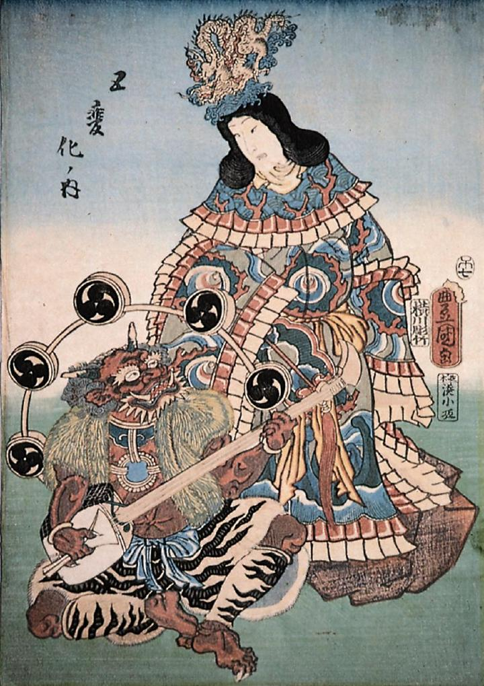

← 图鉴索引

弁財天と雷神。雷神は座って三味線を弾いている。
著作者：歌川国貞／出典：親書誌：M80_naprstek_0005：五変化ノ内；ゴヘンゲノウチ／日付：2011／資源識別子：M80_naprstek_0005_0001_0000
Copyright (c)2010- International Research Center for Japanese Studies, Kyoto, Japan. All rights reserved.